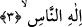

kullanıldığını göstermez, çünkü, muhakkik âlimlere göre Fâtiha’da râcih olan Mâlik
değil Melik’tir.
3. İnsanların İlâhına sığınırım!
“İnsanların ilâhına” Allah Teâlâ’nın melik oluşunun sâdece insanlara hâkim olmak,
onların siyâset işlerini düzenlemek, koruyup kollamak için gerekli tedbirleri almaktan
ibaret olmadığını beyân etmek içindir. Yapıp ettikleri sınırlı olan meliklerin aksine
O’nun melikliği yaşatma, öldürme, var etme, yok etme gibi her türlü tasarrufa kâdir
olmayı gerektiren ülûhiyyet üzerine tesis edilmiş ma‘bûdiyet tarîkıyledir.
Aynı şekilde daha önce işâret ettiğimiz üzere “malikü’n-nâs” ifâdesi “fenâ fillâh”
hâline işârettir. “İlâhi’n-nâs” ifâdesi ise “bakâ billâh” hâline işâret olmaktadır. Çünkü
ilâh ma’bûd-i mutlaktır. Bu ise bütün sıfatlarıyla beraber olan zâttır. Kul Allah’ta fânî
olunca O’nun Melik oluşu zuhûr eder. Sonra ubûdiyyet makâmı için Allah onu vücûda
ircâ eder/döndürür. Çok vesevese veren şeytanın şerrinden istiâze de böylelikle
meydana gelir. Çünkü istiâze vücûdî bir mahal gerektirir. Hâlbuki fenâ hâlinde ne vücûd
vardır, ne s, ne vesvese ne de vesveseci… Bilâkis orada enâniyetin vücûduyla bir
telvin gerçekleşirse der ki: “Senden sana sığınırım”. Allah Teâlâ âbidin vücûduyla
ma‘bûd olunca, şeytan da o âbidin zuhûruyla zuhûr eder. Nitekim daha önce de onun
varlığıyla var olmuştu.
Yine insanlarla takyîd edilmiş rubûbiyet makâmı, melekût âleminin kapısındaki İmama
âiddir. Ve o oraya bakar. Orası onun nazargâhıdır. Orası, üç kişinin nâil olduğu üç
esmâya has üç hazarâttır. Rabb, Melik ve İlâh hazreti. Ricâli ise iki imam ve kutuptur.
İki imam kutbun vezirleri olup sâhibü’l-vakittirler. Mutlak zâtî keşifte kutup
münferittir/tektir. Aynı şekilde kutbun solunda bulunan imam da şehâdet âleminin
kapısında münferit/tektir ki, sağdaki imamın orada bulunması mümkün değildir.
Rubûbiyyet imamı melekûtî varlıklarla beraber olduğu hâlde insanlara nisbet edilmiştir.
Çünkü melik diye isimlendirilen ikinci imamın ölümü esnâsında başkalarının aksine
onun makâmına vâris olması gerekir.
“İrşâd” kitabında demiştir ki: Bütün âlemler Allah Teâlâ’nın rubûbiyeti, melekûtu ve
ülûhiyetine konu oldukları hâlde “insanların ilâhı” denilmesi kendisinden sığınılanın
insanlara düşmanlığıyla bilinen şeytanın şerri dolayısıyladır. Onların Allah Teâlâ’nın
ubûdiyet ve melekûtüne konu olmalarına vurgu yapılması, şeytanın helâke sürükleme ve
tasallutundan kurtarılmalarına işâret içindir. Nitekim âyet-i kerimede şöyle buyrulur:
“Kullarım üzerinde senin hiçbir hakimiyetin yoktur” (Hicr, 15/42). “Muzâfun
ileyh”in tekrar edilmesi ise izâfeti daha açık bir şekilde ortaya koymak ve ziyâde takrîr
içindir. Çünkü, şerefi olmayan şeye önem verilmez, onun zikri tekrarlanmaz, bilakis